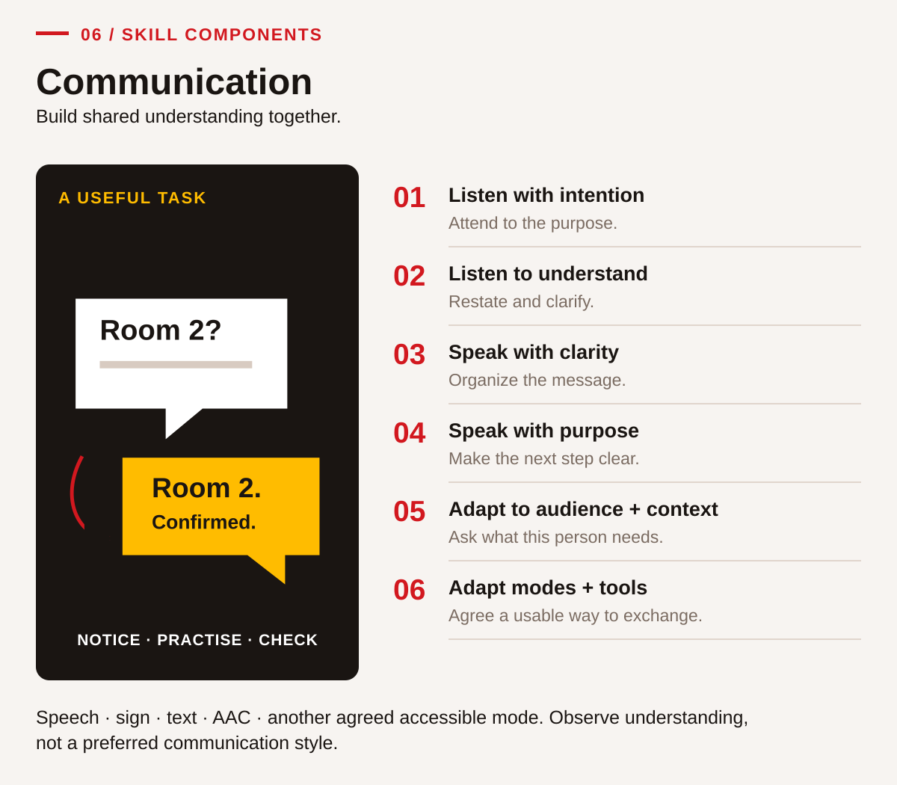
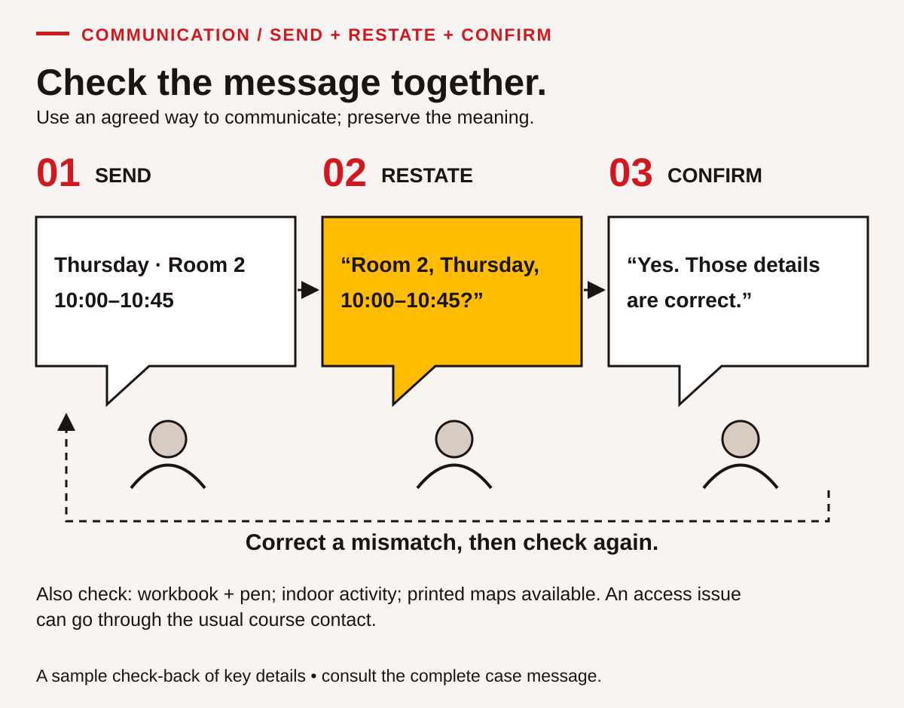
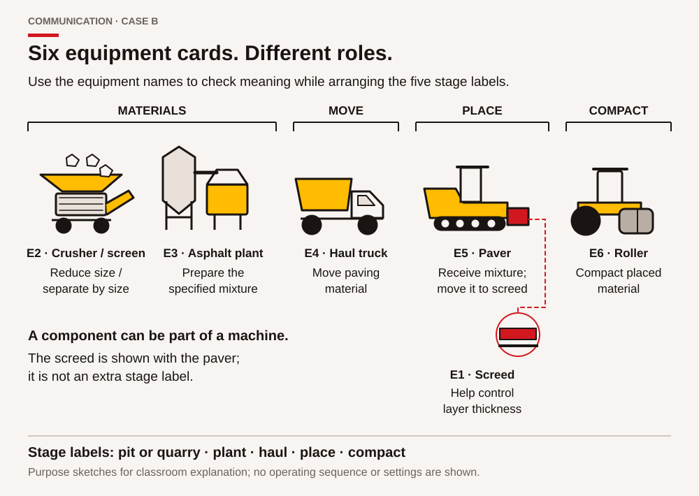

Teaching Communication: build a shared understanding and check it
Communication instruction needs both a sender and a receiver with a reason to exchange information. A fluent presentation may leave the audience unsure what to do. A brief clarification can prevent an important misunderstanding. Teach learners to identify the purpose, receive the message, organize a response and confirm meaning. Observe what the interaction achieves rather than how closely a learner matches one preferred speaking style.
The learner chapter uses fictional classroom changes, a misunderstood card task and a visitor explanation. These settings support practice relevant to B.C. training, work and community life without requiring disclosure of personal experiences. In an ACCESS IS4S classroom, ask about the communication needs of the person and task. Do not assign preferences from identity or ask a learner to speak for a Nation or community.
Include all six components and accessible modes

SkillPlan names listening with intention, listening to understand, speaking clearly, speaking with purpose, adapting to audience and context, and adapting to different modes and tools (2024, p. 85). The learner chapter provides three activities for each: CM-01–CM-03, CM-04–CM-06, CM-07–CM-09, CM-10–CM-12, CM-13–CM-15 and CM-16–CM-18 respectively. Use this sequence flexibly, returning to a component when a later task reveals a need.
The component names use speaking and listening, while the purpose can be supported through speech, sign, text, augmentative and alternative communication or another agreed mode. Record the mode and support accurately. Give every learner turns sending, receiving and clarifying. Document Use appears when a diagram, schedule or reference card carries part of the message; Reading helps inspect it, while Collaboration supports shared turn-taking and repair.
Teach intercultural reflection without stereotypes
The first source strategy concerns intercultural competence (pp. 86–87). Begin with the difference between an observation and an interpretation. “The learner paused and looked at the map” is observable. “The learner was uninterested” is an interpretation requiring more information. Invite several possible explanations, then a respectful question about what would help the exchange.
CM-14 provides this practice; CM-15 replaces stereotype-based questions with choices relevant to the current task. A useful question is, “Would key points in writing or a spoken review help you check this map?” The answer may vary by task. Cultural knowledge is not automatically available for classroom use. Arrange appropriate relationships and permission when a real project calls for a particular community perspective; use the supplied fictional cases for these exercises.
The source's Describe–Analyze–Evaluate activity on p. 91 can be taught through CM-14. Describe the event without judgement, analyse possible meanings, and evaluate a response by its usefulness and evidence. Avoid treating one interpretation as a universal cultural rule. Learners may reflect privately or use a fictional example rather than recount a difficult personal interaction.
Make listening an explicit, teachable action
The second strategy teaches active listening (pp. 87–88). Model preparation, attention to purpose, paraphrasing, clarification and confirmation. Show that an accurate paraphrase preserves the message's limits. A listener should not add an attractive promise merely because it would make the plan easier. A sender shares responsibility by checking the paraphrase and correcting omissions.
Use CM-01 to identify the information needed before receiving a message. CM-02 addresses barriers such as overlapping talk or inaccessible text. CM-03 looks for a useful response. Attention may include looking at a diagram, taking notes, using a device or pausing. Do not grade eye contact, stillness, accent or one response pace. Those features cannot establish comprehension and may reflect different access needs or communication practices.
A worked teaching example: preserve a room change

Use Case A. The current message places Thursday's indoor classroom session in Room 2, from 10:00 to 10:45, and asks learners to bring a workbook and pen. Printed process maps will be available. Model a concise check-back: “The indoor session is now in Room 2, starting at ten and ending at ten forty-five. I bring my workbook and a pen; maps are supplied. Is that correct?”
Have the sender compare the paraphrase with the source rather than automatically agreeing. Then model an unanswered question: “Will transport be provided?” The message contains no transport arrangement. A useful response identifies that limit and asks the responsible course contact; it does not invent a bus. This distinction matters because helpful intentions can still produce inaccurate instructions.
In CM-06, a partner repeats the old Room 1 location and an 11:00 finish. Practise describing the discrepancy and checking the current message together. The outcome is an agreed version or an explicit question for the instructor, not a judgement about the person who repeated the old information. Repeat with another comparable message so that successful recall of the first script is not mistaken for transferable listening.
Use simulations with feedback and another attempt

The third strategy uses role-play and simulations (pp. 88–89). Keep roles simple and the purpose clear. Demonstrate one exchange, allow rehearsal, observe a short attempt, give one useful piece of feedback and repeat with roles reversed. Let learners pause or choose an instructor partnership. They should not imitate another person's disability or perform a cultural stereotype.
CM-07–CM-09 develop plain explanations and clear references; CM-10–CM-12 distinguish a request, clarification and handover. CM-13 changes the audience while retaining the technical meaning of the introductory map. CM-16–CM-18 change the mode and require a question-and-response check. A connected call or delivered message is not proof that the recipient understood it. Ask what information was confirmed and what remained pending.
Assess understanding without introducing an unrelated barrier
The source discusses direct observation, suitable assessment tasks and the danger of confusing listening with writing (pp. 89–90). A short paraphrase, selected response, relevant action or clarification can show understanding without an extended written summary. If learners studied the printed script first, record that preparation. Use a new comparable message when the aim is to observe reception of unfamiliar information.
Live observation is sufficient; recordings require an agreed purpose and consent. Keep evidence specific: “Asked which version applied and repeated the confirmed room and time.” Increase complexity through more details, an unfamiliar audience, ambiguity or a changed channel. Keep access supports available and distinguish an unobserved component from an unsuccessful attempt. Classroom feedback categories do not establish official Communication proficiency levels.
All three source grab-and-go patterns are retained: Describe–Analyze–Evaluate through CM-14; identifying and practising useful listening behaviours through CM-01–CM-06; and receiving instructions with a check-back through CM-04/CM-08. Preview the source's resource leads on p. 90 for current availability and fit. Finish with a specific next practice, such as shortening a paraphrase while preserving its conditions, then observe that change in another exchange.
Sources and companion work: SkillPlan guide, pp. 85–91; Communication learner chapter; answer guidance.